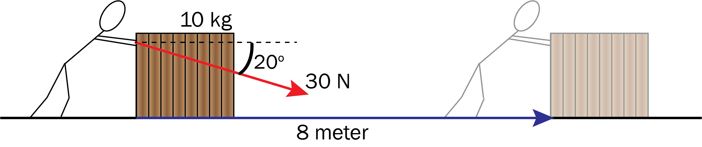
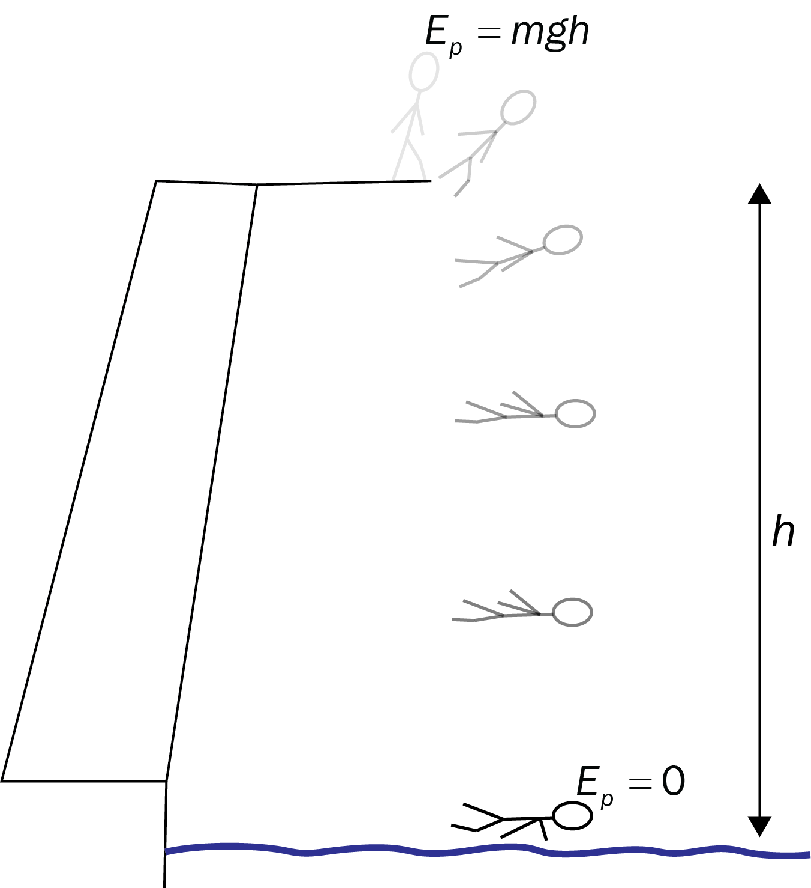

Arbeid, mekanisk energi og effekt
Du skal ha kompetanse om
- arbeid \(W = F \cdot s\)
- effekt \(P = \frac{\text{Energi}}{\text{Tid}}\)
- bevaringsloven for mekanisk energi \(E_0 = E + W\)
Arbeid
Arbeid \(W\) (på engelsk: work) er definert som
\[ W = F \cdot s \cdot \cos(\alpha) \]hvor \(\alpha\) er vinkelen mellom kraften \(F\) som virker på et legeme og strekningen \(s\) legemet beveger seg.
Eksempel

Hvor stort arbeid gjør personen på kassa?
Merk:
Med arbeid i fysikken mener vi energien vi tilfører et legeme.
\(\cos(\alpha)\)-faktoren i definisjonen gjør at det bare er den delen av
kraften som er parallell med bevegelsesretningen som gjør arbeid.
Det er bare denne delen som kan gi legemet en fartsendring.
Eksempel
En koffert har masse 5,0 kg. En mann går med konstant fart bortover mens han bærer kofferten i en konstant høyde.
Hvor stort arbeid gjør mannen på kofferten for hver meter han går?

Siden vinkelen mellom kraften og strekningen er \(90^\circ\), gjør han ikke noe arbeid på kofferten.
Mekanisk energi
Kinetisk energi: Arbeidet summen av kreftene gjør på et legeme er definert som endringen av kinetisk energi \(\Delta E_k\), hvor vi med Newtons 2. lov \(F = ma\) og den tidløse bevegelseslikningen \(v^2 - v_0^2 = 2as\) da kan vise at
\[ \Delta E_k = W = F \cdot s = mas = \frac{1}{2} mv^2 - \frac{1}{2}mv_0^2 \] Altså er kineitsk energi definert som \[ E_k = \frac{1}{2} mv^2 \]Potensiell energi er arbeidet tyngdekraften kan gjøre:
\[ E_p = W = F \cdot s = G \cdot h = mgh \]
Mekanisk energi er summen av kinetisk og potensiell energi:
\[ E_{\text{mek.}} = \frac{1}{2} mv^2 + mgh \]Bevaring av mekanisk energi: Når ikke det virker friksjon eller luftmotstand er den mekaniske energien bevart:
\[ \frac{1}{2} mv_0^2 + mgh_0 = \frac{1}{2} mv^2 + mgh \]Eksempel

Eksempel

Hvor stor akselerasjon har hun oppover skråplanet? Se bort fra friksjon og luftmotstand.
Eksempel
Skateren i forrige eksempel har masse 60 kg, inkludert skateboard.
På grunn av luftmotstand har hun bare farten 5,0 m/s på toppen av skråplanet.
Hvor stort arbeid har da friksjonen og luftmotstanden gjort?
Effekt
Effekt \(P\) (på engelsk: power) er energi per tidsenhet, som i praksis ofte tilsvarer arbeid per tidsenhet:
\[ P = \frac{E}{t} = \frac{W}{t} \]Enheten til effekt er watt, som er det samme som joule per sekund.
Merk: I en del idretter, for eksempel sykling, snakker vi ofte om «Watt-målinger». Dette er egentlig effektmålinger: En måling av hvor mye energi du klarer å yte per sekund.
Eksempel
Reidar sykler i 30 min. På sykkelcomputeren hans står det at han har hatt en gjennomsnittlig effekt på 400 watt.
Hvor mye energi tilsvarer dette?
Eksempel
John har masse 70 kg. Han løper opp en 15 meter høy trapp i løpet av 10 sekunder.
Hvor stor effekt yter han?
Eksempel
Menneskekroppen har en virkningsgrad på omtrent 20 %.
Hvor mye energi bruker John i eksempelet ovenfor?